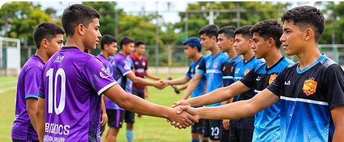

O verdadeiro campeão se forma dentro e fora de campo
Cada criança que chega ao Barracuda F.C. traz consigo um sonho. Algumas querem marcar o gol decisivo de uma final, outras desejam representar sua província e muitas imaginam tornar-se futebolistas profissionais um dia.
Mas por trás de cada sonho esportivo existe uma responsabilidade ainda mais importante: formar pessoas honestas, disciplinadas, respeitosas e solidárias. O futebol oferece oportunidades extraordinárias para aprender a conviver, superar dificuldades, trabalhar em equipe e entender que o sucesso nem sempre se mede por troféus.
No Barracuda F.C., não queremos formar apenas bons jogadores. Queremos ajudar a formar seres humanos capazes de transformar positivamente suas famílias e comunidades.

Explorar as 14 seções do artigo
O verdadeiro campeão se forma dentro e fora de campo
Uma equipe reúne crianças com personalidades, habilidades, experiências e realidades familiares diferentes. Compartilhar esse espaço é uma das primeiras lições do esporte. Cada jogador aprende a esperar sua vez, ouvir orientações, respeitar regras e colaborar com colegas diferentes.
O futebol como escola para a vida

A disciplina nasce de atitudes diárias: chegar na hora, preparar o uniforme, cumprir as tarefas escolares e honrar compromissos. Não deve ser confundida com medo ou castigo. Exige regras claras, explicações adequadas e consequências proporcionais e respeitosas.
Disciplina: pequenos hábitos, grandes resultados
O respeito não depende do resultado ou da habilidade. Todos merecem dignidade. Respeitar é ouvir, evitar insultos, aceitar diferenças e compreender que os erros fazem parte da aprendizagem.
Respeito: tratar os outros como queremos ser tratados
Ganhar traz alegria; perder pode causar frustração. As duas experiências desenvolvem maturidade emocional. Os pais devem permitir que os filhos expressem seus sentimentos sem ridicularizá-los ou exigir que escondam suas emoções.
Aprender a ganhar e também a perder

A honestidade é um dos valores fundamentais do Barracuda F.C. Um jogador honesto respeita as regras, reconhece seus erros e não busca vantagens por meio de enganos.
Honestidade e jogo limpo
União não significa pensar da mesma maneira. As diferenças não impedem a busca de um objetivo comum. Uma equipe solidária ajuda seus integrantes e faz com que todos se sintam incluídos. Inclusão exige rejeitar zombarias e discriminação.
União, solidariedade e inclusão: ninguém deve se sentir sozinho
Ninguém nasce dominando todas as habilidades do futebol. Conduzir a bola, melhorar um passe e compreender estratégias exige prática, paciência e orientação. Perseverar não significa ignorar a dor ou o cansaço.
Perseverança: os erros também ensinam

Compartilhar fotos sem autorização, espalhar boatos, insultar ou ridicularizar alguém contraria o respeito e a solidariedade. Antes de publicar, pense se o conteúdo pode machucar alguém ou se é necessário pedir permissão.
Os valores também se praticam nas redes sociais
Os pais são exemplos de comportamento. Quando um adulto insulta o árbitro ou humilha um jogador, transmite uma mensagem contrária aos valores que queremos ensinar. Acompanhar significa apoiar, ouvir e reconhecer o esforço.
Os pais: apoiar sem pressionar
O treinador influencia a técnica, a confiança e o comportamento dos jogadores. Corrigir sem humilhar, ouvir sem discriminar e estabelecer regras claras são responsabilidades essenciais.
O treinador: educar pelo exemplo
Os valores ganham força quando se tornam ações. Estes dez compromissos podem ser lidos em família e discutidos nos treinos.
Dez compromissos do jovem jogador Barracuda
Em um jogo amistoso, o treinador observa não apenas as ações esportivas, mas também o respeito, o companheirismo, a honestidade e a solidariedade.
Uma atividade especial: a partida dos valores
Cada dia oferece uma oportunidade de praticar um valor diferente. A família pode preencher um pequeno calendário semanal e conversar sobre o que aprendeu.
O desafio familiar: sete dias praticando valores
Desde nossa fundação, em 29 de abril de 2017, o Barracuda F.C. procura contribuir para o desenvolvimento esportivo e humano de crianças, adolescentes e jovens de nossa comunidade. Nossos valores institucionais — honestidade, transparência, disciplina, inclusão, respeito, solidariedade e excelência — orientam nossas atividades. Desejamos que cada jogador leve esses ensinamentos consigo, mesmo depois de encerrar sua trajetória esportiva.
Que cada jogador seja reconhecido não apenas por seu talento, mas também por seu caráter.